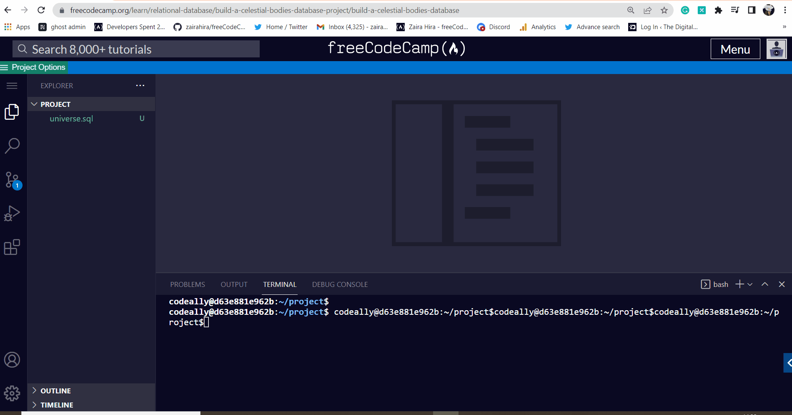

📋 🤖 💬 Copying prompt to clipboard and redirecting...
Ooops, your browser cannot write to your clipboard. You may want to set permissions to always on this domain.
Enable clipboard permissions in Chrome (check the top bar for a clipboard icon)

Or try again:
Retry Clipboard Copy